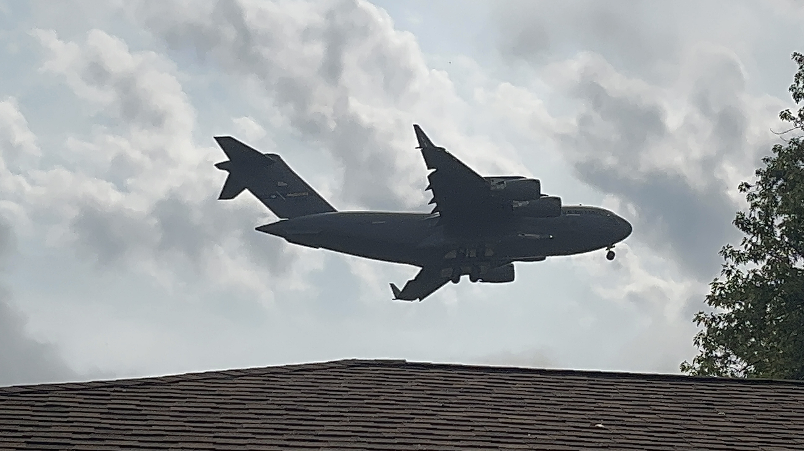

Wave of World Leaders Expected to arrive at JFK for UNGA #80
The first arrival for UN Week at JFK!
Published September 1, 2025
The start of UN Week activity at JFK has just begun! Here's some general info & tips you should know
From September 6 to the end of September, JFK is expected to have a unique variety of aircraft. This is because of the United Nations General Assembly, a global meeting for World Leaders, Presidents, Governments, VIPs, and celebrities who have ties to world leaders.
Peak activity begins on the 6th to the 15th. This is so that ranking individuals have time to prepare for the big meeting. At the start, cargo planes, such as C-17s and AN-12s, arrive to carry equipment, provide support, and prepare for VIPs. Generally, World leaders typically arrive during the 6th through the 9th so they have at least some equipment (usually brought by military cargo charters and international air forces) before their arrival.
JFK gets a majority of the planes, such as tiltrotors, widebodies, narrowbodies, and other special planes. For example, one of my favorite arrivals has to be the V22s, C17s, and other military cargo planes. You never truly know what a cargo plane is carrying, especially one from another air force, but you can always make educated guesses based on the situation.
During UN Week, security at airports is tighter and more restricted. Planes such as the Boeing KC-135 Stratotanker, Lockheed Martin F-35 Lightning II, and other aircraft circle over the airport at times, usually when the President of the United States is arriving. This is to enhance security, surveillance, and safety protocols at airports in the New York City Metropolitan Area.
If you are spotting this UN Week, I'd reccomend Brookville Park, since it is very close to the runway, an amazing planespotting park with many different spotting variations based on location. I am most familiar with this park, so I know a LOT about it. I'd also recommend Bayswater State Park, Rockaway Boulevard, and Shirley Chisholm State Park.
The top 3 most common military arrivals were:
Boeing C-17A Globemaster III - 12+ flights
03 3125 Sep 6 10:54 AM ADW - JFK (BANNR59)
03 3125 Sep 6 12:39 PM JFK - WRI (BANNR59)
03 3125 Sep 7 7:25 PM WRI - JFK (FAMUS49)
03 3125 Sep 10 11:12 AM ADW - JFK (FAMUS94)
03 3125 Sep 11 5:52 PM JFK - IAD (FAMUS80)
97 0041 Sep 9 1:20 PM JFK - CHS (BANNR79)
07 7188 Sep 9 1:35 PM ADW - JFK (RCH1052)
07 7188 Sep 9 3:52 PM JFK - DOV (RCH1052)
Bell-Boeing MV-22B Osprey - 6 / 7+
168292 Sep 9 4:48 PM JFK - JRA (OSPREY1)
168302 Sep 9 4:48 PM JFK - JRA (OSPREY2)
168689 Sep 8 4:17 PM NYG - JFK (OSPREY)
Lockheed Martin C-130J Super Hercules - 4+
08 5712 Sep 15 8:52 AM WRI - JFK (X)
08 5712 Sep 15 10:45 AM JFK - NGY (X)
08 5712 Sep 15 2:22 PM NGY - JFK (X)
08 5712 Sep 15 3:34 PM JFK - NGY (X)
UNGA80 VIP Flight Logs
September 20, 2025
| Time | Aircraft | Registration | Airline | Route | Runway | Notes |
|---|---|---|---|---|---|---|
| 12:46 AM EDT | Airbus A330-243 Prestige | UP-A3001 [BEC009] | Government of Kazakhstan | JFK-SWF | Runway 31L | Rare / Military |
| 9:11 AM EDT | Boeing 737-97Y(ER)(BBJ3) | LX-DIO [SVW46DD] | Global Jet | DSS-JFK | Runway 04R | Rare |
| 10:27 AM EDT | Airbus A330-202 | A6-HHM [QAF4] | Qatar Amiri Flight / Air Force | DOH-JFK | Runway 04R / 31R | Rare / Military |
| 10:39 AM EDT | Boeing 737-97Y(ER)(BBJ3) | LX-DIO [SVW46DD] | Global Jet | DSS-JFK | Runway 04R | Rare |
| 11:31 AM EDT | Boeing 787-8 BBJ | 2-DEER [ANGOLA1] | Sonair - Presidential Flight | MCO-JFK | Runway 04L | Rare + Military |
| 1:34 PM EDT | Airbus A400M-180 Atlas | 17-0078 [TUAF157] | Türk Hava Kuvvetleri (Turkish Air Force) | TER-JFK | Runway 04R | Rare + Military |
| 4:34 PM EDT | Airbus KC-30A | A39-007 [ASY335] | Royal Australian Air Force | HNL-JFK | Runway 13L | Rare + Military |
| 4:38 PM EDT | Airbus A330-243 | OD-MEE [MEA001] | Middle East Airlines - Presidential Flight | BEY-JFK | Runway 22L | Rare + Military |
| 4:50 PM EDT | Boeing 777-3U3(ER) | PK-GIG [GIA1] | Guardia Indonesia - Presidential Flight | KIX-JFK | Runway 13L | Rare + Military |
| 5:50 PM EDT | Boeing 787-8 Dreamliner BBJ | UK-001 [UZB1] | Government of the Republic of Uzbekistan | TAS-JFK | Runway 22L | Rare + Military |
| 6:54 PM EDT | Airbus A330-243 | P4-MLO [CONGO01] | Comlux Aruba - Democratic Republic of Congo Presidential Charter | PMI-JFK | Runway 22L | Rare + Military |
| 7:06 PM EDT | Airbus A319-115 ACJ | OM-BYA [SSG001] | Slovak Government Flight Service | BTS-JFK | Runway 22L | Rare + Military |
September 19, 2025
| Time | Aircraft | Registration | Airline | Route | Runway | Notes |
|---|---|---|---|---|---|---|
| 12:17 PM EDT | Boeing C-17A Globemaster III | 07-7172 [FAMUS07] | United States Air Force | NYG-JFK | Runway 31L | Military |
| 1:36 PM EDT | Airbus A340-642 | D-AIHW [DLH400] | Lufthansa | FRA-JFK | Runway 31R | Retired soon |
| 1:52 PM EDT | Gulfstream G650ER | VQ-BNZ [RJA951] | Government of Jordan | ADW-JFK | Runway 31L | Rare / Military |
| 3:50 PM EDT | Boeing 777-2KQ(LR) | A6-MSD [QAF10] | Qatar Amiri Air Force | DIA-JFK | Runway 31R | Rare / Military |
| 4:16 PM EDT | Airbus A340-541 ACJ | 9K-GBB [KUG002] | State Of Kuwait - Air Force | KWI-JFK | Runway 31R | Rare / Military |
| 5:50 PM EDT | Boeing 777-2KQ(LR) | A6-MSD [QAF10] | Qatar Amiri Air Force | JFK-IAD | Runway 31L | Rare / Military |
| 6:02 PM EDT | Airbus A340-541 ACJ | 9K-GBB [KUG002] | State Of Kuwait - Air Force | JFK-SWF | Runway 04L | Rare / Military |
| 8:55 PM EDT | Boeing 747-48EF(SCD) | HL7436 [AIH587] | AirZeta | ANC-JFK | Runway 04R | None |
| 9:53 PM EDT | Airbus A320-251NX(LR) | 4X-AGK [AIZ101] | Arkia Israeli Airlines | CDG-JFK | Runway 04R | Rare |
| 10:03 PM EDT | Airbus A330-243 Prestige | UP-A3001 [BEC001] | Government of Kazakhstan | OSL-JFK | Runway 04R | Rare / Military |